收录于合集 #美国研究 24个

作品简介
【作者】 Matthew H. Graham，耶鲁大学政治系博士候选人，研究兴趣为美国政治。Milan Svolik，耶鲁大学政治系教授，研究兴趣为比较政治，政治经济学，形式政治理论。
【编译】 宋翔宇（国政学人编译员 北京大学外国语学院本科生）
【校对】 兰星辰、晋玉
【审核】 李雯珲
【排版】 马璐
【美编 】聂涵琳
【来源】 GRAHAM, MATTHEW H., and MILAN W. SVOLIK. 2020. “Democracy in America? Partisanship, Polarization, and the Robustness of Support for Democracy in the United States.” American Political Science Review 114(2): 392–409. doi: 10.1017/S0003055420000052.
期刊简介
American Political Science Review《美国政治科学评论》是一本创立于1906年的同行评议的学术季刊，涵盖了政治学的所有领域。其由剑桥大学出版社出版,是美国政治学协会的官方期刊。该杂志目前的主编是托马斯·科尼格（Thomas König）。2019年该刊的影响因子为4.183。
论美国的民主：党派之争、两极分化以及对民主支持的稳健性
Democracy in America? Partisanship, Polarization, and the Robustness of Support for Democracy in the United States
Matthew H. Graham Milan Svolik
内容提要
美国国内对民主的支持是否坚定到足以阻止民选政客的不民主行为的程度?本文构建了一个以公众作为民主检查的模型，并使用两个实证策略对其进行检验：一个是理想的、具有全国代表性的候选人选择实验，其中一些政客的立场违反了关键的民主原则；另一个是发生在2017年蒙大拿州众议院特别选举期间的自然实验。本文的研究推断了美国人在民主原则和其他有效但潜在冲突的考虑之间进行权衡的意愿，比如政治意识形态、党派忠诚和政策偏好。本文发现美国公众作为一个民主检查的可行性非常有限，只有一小部分美国人在选举中优先考虑民主原则，而这种倾向在包括党派力量、政策极端主义和候选人政纲分歧(candidate platform divergence)的极化中逐渐弱化。本文的发现呼应了关于政治温和和横切分裂(cross-cutting cleavages)[1]对民主稳定的重要性的经典论点，并强调了极化对民主的危险。
[1] Cross-cutting cleavages were originally suggested as a mechanism for political stability, as no group can align all its members along a uniform cleavage-based platform, but rather has to appeal to members of the group that are spread throughout the groups created by other cleavages.
文章导读
01
介绍
Dahl(1966, 40)总结道，在美国没有人会反对民主。托克维尔在《论美国的民主》中提出，美国一直是最支持民主的。本文表明，这种民主建立在脆弱的基础上。本文通过假想的选举情景下的候选人选择来推断美国人对民主原则的承诺。每个候选人都被试验性地赋予了近似于现实选举的属性和政纲，关键的是，他们可能会支持违背包括自由和公平的选举、公民自由、制衡(checks and balances)等核心民主原则的立场。在这个框架下，不是根据选民的话语判断其是否“支持民主”，而是根据他们的选择是否显示出对民主原则的偏好，而非对其他有效但潜在冲突的考虑因素的偏好，如政治意识形态、党派忠诚度或政策偏好。
本文的研究设计建立在这样的观察之上，即选举是民主自卫的基本工具：特别是在先进的民主国家，选民有机会通过在投票中不投给那些违反民主原则的政客，以此来阻止他们。本文认为，这种民主检查的可行性的一个关键障碍是党派、意识形态和基于政策的两极分化。选举竞争往往使选民在两种有效但可能相互冲突的考虑之间做出选择：党派利益和民主原则。两极分化增加了选举的风险，反过来也增加了将民主原则置于党派利益之上的代价。当面对一个违反民主原则的候选人和一个遵守民主原则但在其他方面不具吸引力的候选人之间的选择时，很大一部分选民可能会牺牲民主原则，选择一个拥护自己政党或利益的候选人。在两极化严重的选民中，即使是亲民主的选民也可能首先选择党派，其次选择民主。
本文发展了一个公众作为民主检查的模型。在Svolik(2020)的基础上，本文扩展了经典的选举竞争空间框架，以解释可能持破坏民主原则立场的候选人。这类候选人被定义为负价属性：虽然选民可能在政策、意识形态或党派上存在分歧，但他们一致认为选举竞争应该是民主的，更喜欢符合关键民主原则的候选人。这个框架对两极分化对选民抵抗非民主候选人的影响做出了一些预测： （一）具有极端或强烈政策偏好的选民比中间派和温和派更愿意牺牲民主原则；（二）两极化或缺乏横切分裂的选民对破坏民主原则的候选人惩罚较少；（三）候选人政纲极化对民主的损害独立于极化选民。
这一框架指导了本文对候选人选择实验以及在2017年蒙大拿州众议院特别选举期间进行的一个自然实验的设计和分析，结果如下：1. 美国人重视民主，但程度没那么高；2. 对民主的支持是高度灵活的；3. 中间派是支持民主的力量；4. 大多数选民首先关注党派，其次是民主；5. 两党支持者都采用党派“双标”；6. 政纲极化不利于民主；7. 民众对不同的反民主行为的敏感性不同；8、美国人对什么是民主、什么不是民主有深刻的了解。
以非参数分析检验这些发现后，本文利用候选人选择实验的设计与理论框架间的紧密联系，并采用结构化的方法，用一些理论上可靠的参数（包括选民对民主相对于政党和政策的权重）来简要总结受访者对候选人选择的变化。另外，选民们还会根据候选人的特点来“定价”民主(price democracy)，放弃惩罚违反民主原则的候选人。之后扩展了理论模型来解释实验发现，即在惩罚违反民主原则的候选人时，选民采用了党派的双重标准，这意味着美国人在支持民主方面既非完全原则性，也非纯粹工具性。
最后一部分关注现实世界的选举——2017年蒙大拿州众议院特别选举期间进行的一个自然实验。在选举前夕，两名主要候选人中的一名攻击了一名记者，这是其不尊重新闻自由的公开信号，或至少是一种不受欢迎的价码。至关重要的是，只有选举日的选民在投票前看到了这一信号，而在蒙大拿占注册选民多数的缺席选民(absentee voters)已经投了票。本文因此采用双重差分法(DID, difference-in- differences)，比较缺席选民和选举日选民之间选区级别的投票变化，以推断他们是否愿意惩罚这一候选人。结果与理论预期和实验结果一致，只有温和选区通过跨党派投票来惩罚对记者的攻击，在党派色彩浓厚的选区，对党派的忠诚胜过对不民主的惩罚。
这些发现表明，传统的、直接质疑的对民主的支持措施可能是有缺陷的，因为它们没有考虑到选民为了党派利益而放弃民主原则的意愿。从分析和实证的角度，本文检视了许多关于两极分化的有害后果。在选民个人层面上，极化可能是那些有极端或强烈倾向的选民的特征。在选民层面上，极化可能是选民偏好的U型分布，也可能是跨议题、或议题领域与党派归属之间的偏好高度相关。在候选人层面上，极化可以理解为候选人政纲之间的距离较大。这些关于极化的不同概念很少在一个单一的理论框架内被研究。分析表明，每一种两极分化都会单独削弱选民对不民主候选人的抵抗力。
02
**
**
公众作为民主检查的模型
<img src=’/images/1867/6.jpeg’ width=‘100%’ />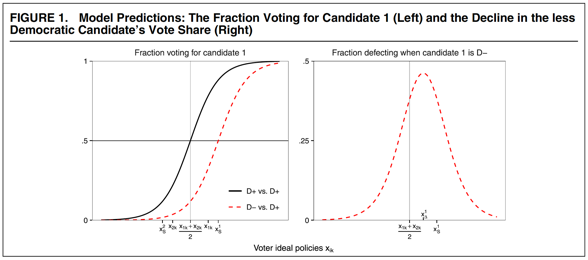
03
候选人选择实验
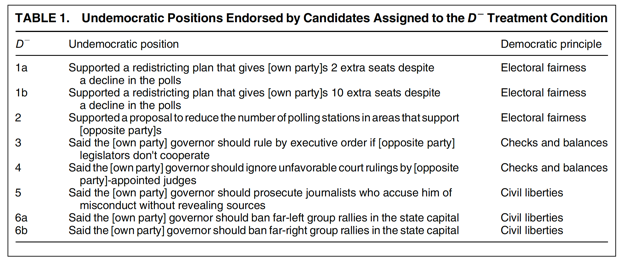
**
**
3.1 民主原则vs.政策偏好
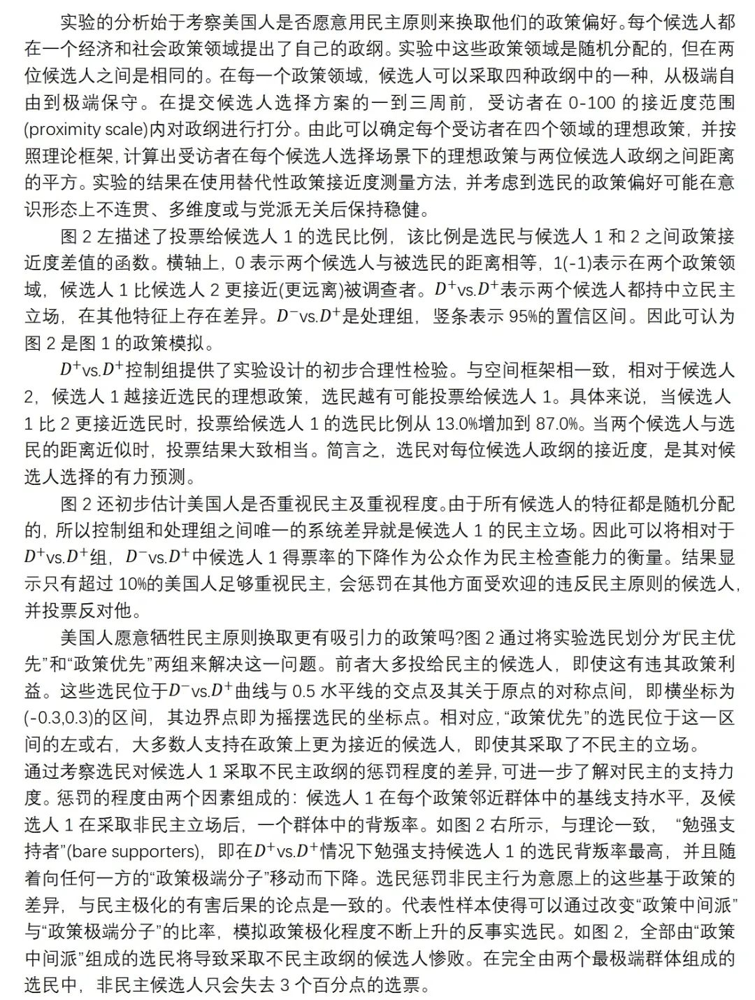 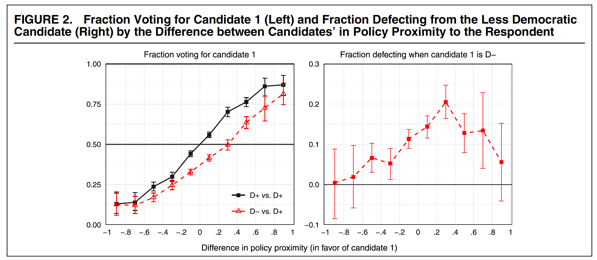
**
**
3.2 党派之争是否胜过公民道德
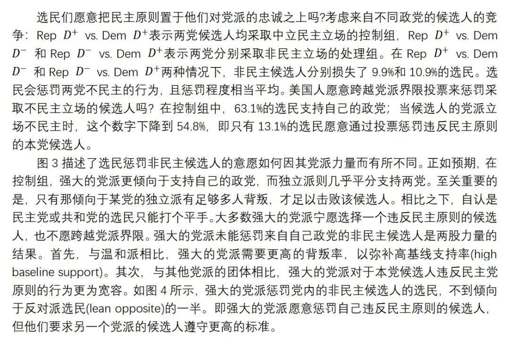 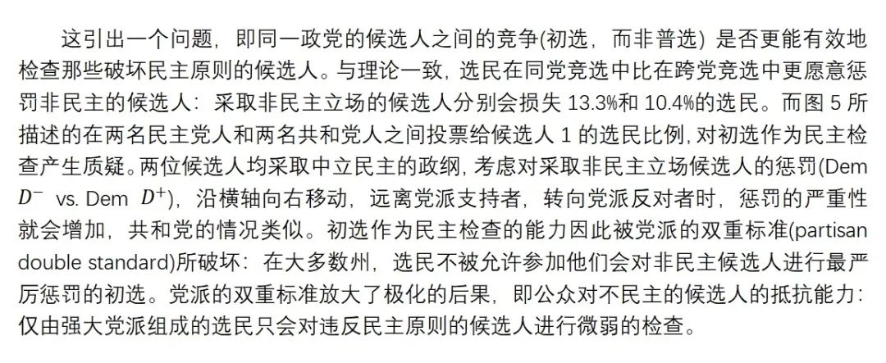
**
**
3.3 候选人极化的结果
**
**
3.4 抵制非民主行为
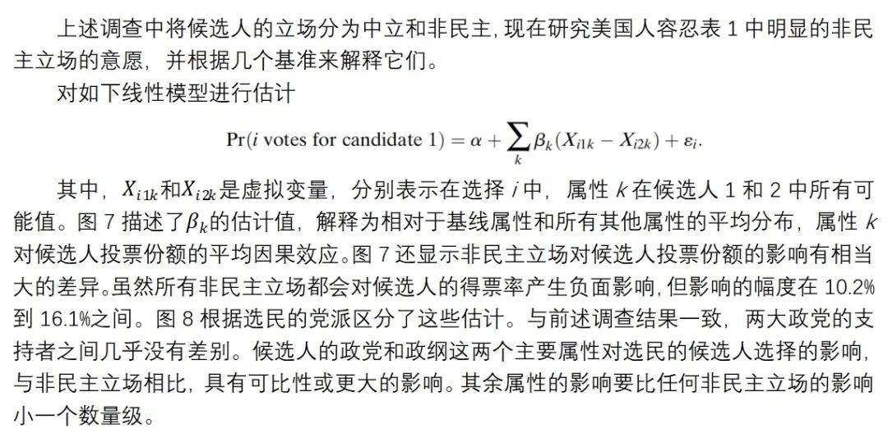
**
**
04
对民主支持的结构性估计
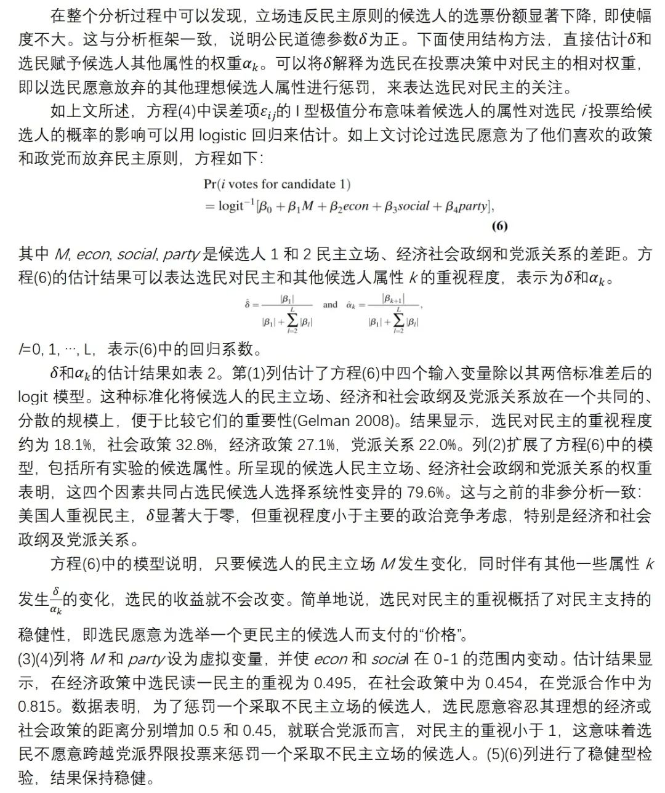 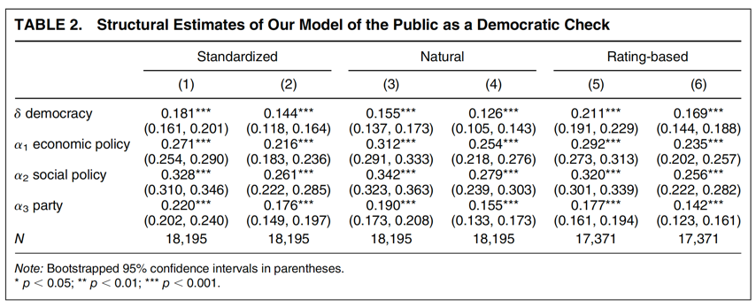
**
**
05
2017年蒙大拿自然实验
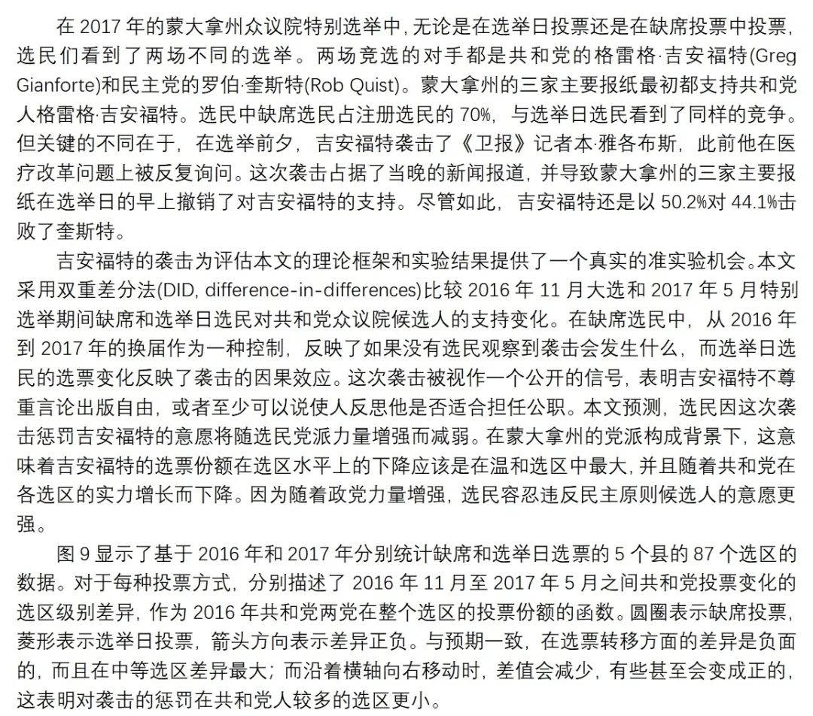 <img src=’/images/1867/26.png’ width=‘100%’ />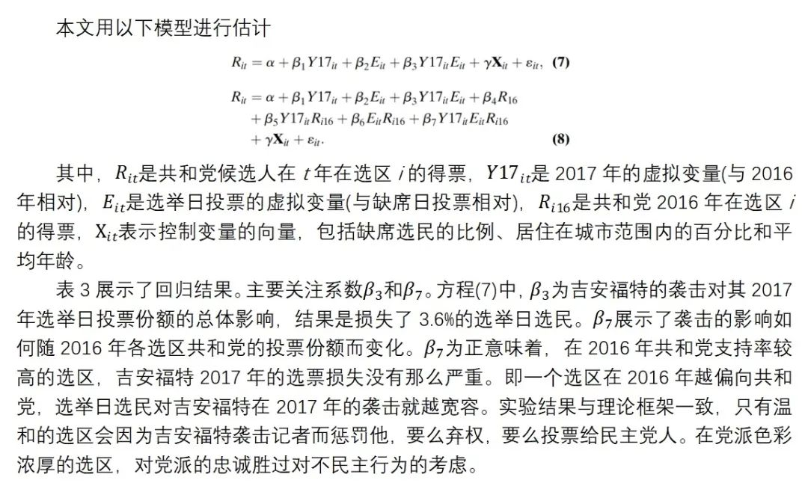 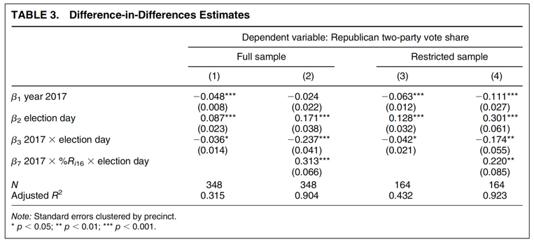
**
**
06
结论
本文探讨了美国民主理想与实践之间的一个明显矛盾。至少自从托克维尔《论美国的民主》以来，美国一直是民主政治发展的原型，也是世界其他国家的理想典范。在美国国内，共同致力于民主理想是国家认同的核心部分。但美国依然存在许多民主缺陷，如选区划分、党派管理和选举裁决。本文通过考察一个关于对美国民主支持的稳健性的基本问题揭示了这些矛盾：在美国，对民主原则的忠诚是否足以让选民对民选政客的不民主行为进行检查?这个问题的相关性在于选举作为民主稳定的工具所发挥的关键作用：公众可以通过在投票中不投给具有威权倾向的候选人来维护民主。
对候选人选择实验和自然实验的分析一致表明，只有一小部分美国人在他们的选举选择中优先考虑民主原则，而这样做违背了他们的党派认同或喜欢的政策。比例如此之小是两种机制的结果：1. 选民愿意为了党派目的而牺牲民主原则；2.选民在惩罚违反民主原则的候选人时采用党派“双重标准”。
本文的研究表明，现有的关于美国和其他国家对民主支持的解释仍待加强。一方面，分析显示，美国选民并不是局外人：美国民主可能和世界其他地区一样，容易受到极化的不利影响。另一方面，由于世界范围内支持民主的传统措施也存在本文的研究所强调的缺陷，因此我们对世界范围内的民主支持可能过分自信。
译者评述
本文揭示了一个有趣的现象：被认为是民主典范以及将民主理想作为国家认同核心的美国依旧存在民主缺陷。本文使用了两个实验，一个理想的候选人选择实验及2017年的自然实验，论证美国选民作为民主检查的有效性。结果显示，选民作为民主检查的可行性十分有限，只有一小部分美国人会在选举中优先考虑民主原则。而在党派极化、选民极化的情况下，党派和政策优先，民主次之。本文对有关民主倒退的研究做出了贡献，解释了为什么美国在民主进程中，特别是在州和地方一级，仍然存在一些令人费解的缺陷。微观基础上，本文结合了有关民主化的两个经典研究，一是强烈的政治分裂是对民主稳定的威胁(Dahl 1956; Lipset 1960)，二是对民主稳定的解释应明确说明关键行为者遵守民主政治规则的动机(Przeworski 1991; Weingast 1997)。而本文的结论显示，民选官员遵守关键民主原则的动机，在很大程度上取决于公众是否愿意制裁那些违反民主原则或忽视其执行的人。
本文的结论一定程度上也有助于理解当前美国政治的极化。美国的民主不是完美的，而是存在缺陷甚至出现民主倒退的。从1971年到2013年，美国的游说公司增加了将近12000家，这些利益集团已经渗透到国会，这就导致了美国日益增长的超党派、两极分化的两党制。这种分歧削弱了效率和政治稳定。自2016年以来，美国国会和特朗普政府的行事方式尤其体现了民主倒退。美联社2017年的一项民意调查发现，三分之二的美国人认为特朗普“很少或根本不尊重美国的民主制度和传统”。虽然特朗普并不完全站在民主的对立面，但国会激进化和超党派性质的趋势逐渐明显。这种强硬的两极分化促使政治精英在一个基本的国内框架内寻求永久的优势，甚至可能暗示他们会忽视对民主的潜在威胁，以防止反对党掌权。
本文的实验设计和回归分析很好地验证了假设。但从细节来看，实验设计依然存在一定的问题。候选人选择实验过于理想化，实验将各种属性随机分配给候选人，并假设候选人持相同的政纲，会将政策与党派相结合。这样的设计虽然便于分析，但外部有效性有限，如政策和党派的结合在现实世界中很少见到。其次，正如文章本身也提到，与当代美国选举相比，候选人政策的总体分布更为中间派。实验设计的这一部分仍需进一步改善。
参考文献
[1] Joshua M.M. Portzer. Democratic Backsliding in the U.S. and Why the Rest of the West Should Care http://www.inquiriesjournal.com/articles/1781/democratic-backsliding-in-the- us-and-why-the-rest-of-the-west-should-care
[2] Kaufman, Robert R., and Stephan Haggard. 2019. “Democratic Decline in the United States: What Can We Learn from Middle-Income Backsliding?” Perspectives on Politics 17(2): 417–32. doi: 10.1017/S1537592718003377.
文章观点不代表本平台观点，本平台评译分享的文章均出于专业学习之用, 不以任何盈利为目的，内容主要呈现对原文的介绍，原文内容请通过各高校购买的数据库自行下载
**
**
**
**
**
**
添加 “国小政”微信
获取最新资讯


国政学人
支持学术公益与知识传播
微信扫一扫赞赏作者 __赞赏
已喜欢，对作者说句悄悄话
取消 __
发送给作者
发送
最多40字，当前共字
上一页 1/3 下一页
长按二维码向我转账
支持学术公益与知识传播
受苹果公司新规定影响，微信 iOS 版的赞赏功能被关闭，可通过二维码转账支持公众号。